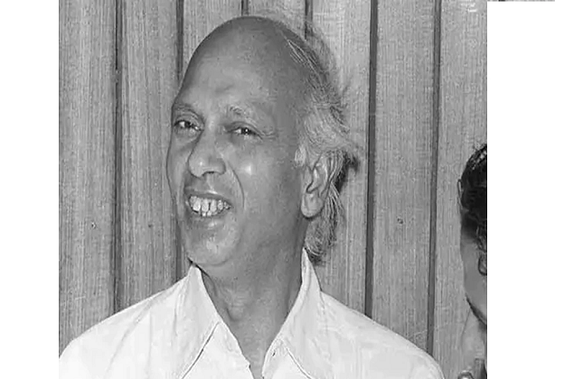
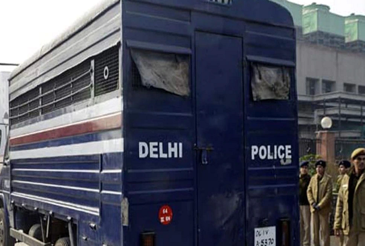
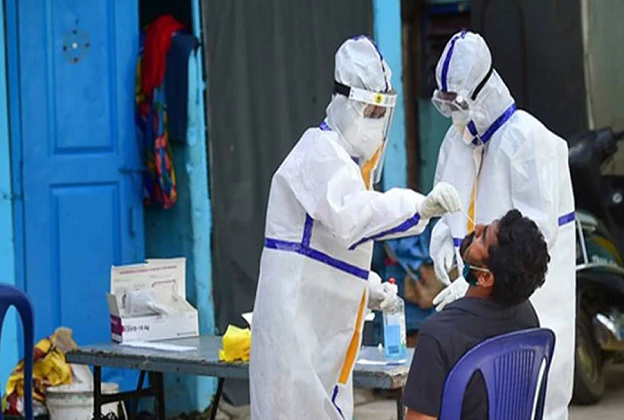
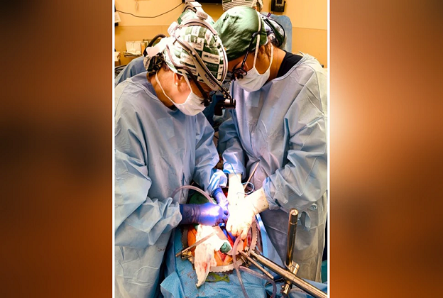
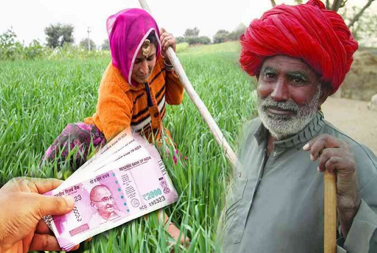
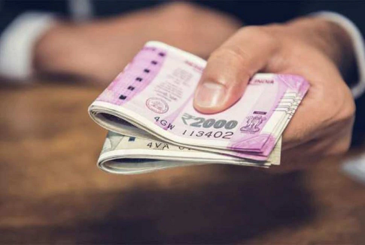
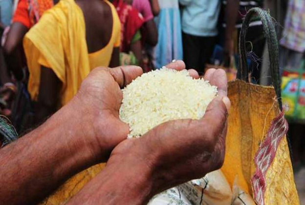

CURRENT-AFFAIRS JAN 23 2022
india
1. What did his daughter say when Netaji's statue was installed? Said this on Bose's legacy
Anita Bose On Subhash Chandra Bose Interview: Anita Bose said that Netaji wanted Italy, Germany and Japan to sign the resolution of India's independence, that is why he met Mussolini twice.

New Delhi: Today (on 23rd January) is the 125th birth anniversary of the great freedom fighter Netaji Subhas Chandra Bose. PM Narendra Modi will unveil the hologram statue of Netaji today. PM Modi has announced that the statue of Netaji Subhas Chandra Bose will now be installed in the umbrella under which the statue of George V was earlier installed at India Gate. Till the time Netaji's statue is not ready, the hologram statue of Netaji will be present at that place. His daughter Anita Bose has expressed happiness over the decision to install Netaji's statue.
Netaji Subhash Chandra Bose's daughter Anita Bose said in an exclusive interview to Zee News that she is very happy. Ever since they came to know that Netaji Subhash Chandra Bose's statue will be installed.
Anita Bose said that Netaji's legacy was exploited. Netaji was a devout Hindu but could not kill people in the name of religion, which we have seen since Partition.
2. PM Modi to unveil hologram statue of Subhas Chandra Bose
Today is the 125th birth anniversary of Netaji Subhas Chandra Bose. On this occasion, Prime Minister Narendra Modi will unveil a hologram statue of great freedom fighter Subhas Chandra Bose at India Gate.
3. UP Election: This CM of UP had left the job of a judge and won the election of the President, the reason is very interesting
The stories of UP politics are very famous. Especially after becoming CM and leaving. Because no CM could complete his term here.
New Delhi: Although it has become common for government bureaucrats to enter politics, but usually these people who become leaders from administrators leave their posts only for good occasions. Whereas in Uttar Pradesh there has been a leader who left the prestigious job of a judge to contest the election of the Prime Minister. However, this risky decision of his came in his favor and he reached the chair of CM of UP.
had returned to the village after leaving the job of a judge
Shripati Mishra, former Chief Minister of UP was born on 20 January 1924 in Sultanpur. He studied from BHU. He was active in student movements and got the job of Judicial Magistrate. He got posting in Farrukhabad. But did not like the job and resigned and returned home. Even after getting the job of a judge, his mind remained engrossed in politics. When he resigned from the job, the village head was to be elected, so his form was filled. Shripati Mishra won this election and progressed in politics in such a way that he never looked back.
4. A person who got angry after misbehaving with his wife, then publicly did such a thing; people were shocked
Man stabbed in the eye for misbehaving with woman at Delhi.
New Delhi: For misbehaving with his wife, a man in Delhi injured a 30-year-old youth with a sharp tool in the eye. The man who attacked said that he took this step after getting angry with the wrongdoing and behavior of his wife.
Tagore Garden case
The Delhi Police team probing the matter said that the incident took place in Tagore Garden area of West Delhi at that time. When suddenly a man in a fit of rage threw an ice-breaking fang in the eye of Bablu, the alleged accused of misbehaving with his wife.
According to the police, in this case, two accused Anuj and a minor boy resident of Nilothi were caught by the people present there and handed over to the police after beating. Meanwhile, taking advantage of the opportunity, two other accused Sohan Thakur, 30, escaped.
5. Corona: Highest number of deaths in a single day after June in Delhi, 11,486 new cases reported
In Delhi, 11,486 new cases of corona were reported in the last 24 hours. At the same time, the death of 45 patients was recorded. Corona tests of 70,226 people were done in Delhi in the last 24 hours, out of which 11,486 people were found infected, 14,802 people were cured. 
New Delhi: On Saturday, 11,486 new cases of corona were reported in the national capital. At the same time, the death of 45 patients was recorded. Corona tests of 70,226 people were done in Delhi in the last 24 hours, out of which 11,486 people were found infected, 14,802 people were cured, corona infection rate in Delhi was 16.36%. At present, out of the total active 58,593 cases of corona in Delhi, 44,415 patients are in home isolation.
so many deaths after a long time
Significantly, after June 5, the capital has recorded the highest number of deaths in a single day. Let us tell you that on June 5, there were 68 deaths.
world
1. Omicron eclipsed the marriage of New Zealand PM Jacinda Ardern, had to cancel the marriage
PM Jacinda Ardern's Wedding: New Zealand's Prime Minister Jacinda Ardern said that there are thousands of people in the country whose lives have been badly affected by Omicron. The worst thing is to stay away from the people you love during a pandemic.
Wellington: Cases of Coronavirus and its new variant Omicron are increasing worldwide. Due to this, the difficulties of the people have increased a lot. Meanwhile, Omicron has eclipsed New Zealand's Prime Minister Jacinda Ardern's wedding. Prime Minister Jacinda Ardern has postponed her wedding amid the increasing cases of Omicron in New Zealand and the restrictions imposed due to it.
PM postpones his wedding
New Zealand Prime Minister Jacinda Ardern said that I have postponed my marriage. If this has happened to anyone else, then my sympathies are with him. However, Prime Minister Jacinda Ardern did not say when she would get married next?
2. The heart of the farmer was eaten by cooking it with vegetables! gave a very painful death
Man Killed Farmer And Ate His Heart: For the last 11 years, the cannibal's brain is being treated in the hospital. He has served in Afghanistan as a soldier.
Paris: In France, a cannibal escaped from the hospital and beat up a woman with a stick. When he was beating the woman, he was caught by the mob and handed over to the police. Then it came to know that this person is none other than the same cannibal who has eaten the heart of a farmer and his tongue cooked with vegetables.
Who is the cannibal who eats the heart of the farmer?
According to a report published in the New York Post, the name of this cannibal is Jeremy Rimbaud. Its age is about 34 years. The cannibal has been locked up in a hospital in France since 2011. The cannibal's brain is being treated in the hospital.
3. Big blow to Dragon: this country took revenge by canceling 44 flights to China
Taking revenge on China, America has decided to cancel 44 of its flights, which will come into effect from January 30. Earlier, China had suspended many American flights citing Corona.
Washington: The dispute between America and China (US-China Tension) is increasing. The US government on Friday decided to cancel 44 flights to China, which will be effective from January 30. Actually, a few days ago, China canceled some American flights citing Corona. Now America has answered it. This decision of the Joe Biden administration will affect the carriers of China's Xiamen Airlines, Air China, China Southern Airlines and China Eastern Airlines.
Chinese embassy made this demand
China has canceled 20 flights of United Airlines, 10 of American Airlines and 14 of Delta Airlines since December 31 after some passengers got corona infected. Liu Pengyu, spokesman for the Chinese embassy in Washington, said on Friday that the policy is the same for all international flights to China. Pengyu called this move of America unfair and said that we urge America not to stop passenger flights of Chinese airlines.
4. The person was not seen for many days, when neighbors checked, the body was found among 100 snakes
A man was found dead among more than 100 poisonous snakes in a house in the US state of Maryland. The age of the person found dead was 49 years. The neighbors of the man told the police that he had not been seen for several days.
New York: A man was found dead among more than 100 poisonous snakes in a house in the US state of Maryland. The age of the person found dead was 49 years. The neighbors of the man told the police that he had not been seen for several days. After this, when the neighbors went to meet him at his house, he was dead.
no one doubts
Officials have not yet released the identity of the dead man. According to the report, after getting the information, police and fire officials also reached the spot and entered through the main door of the house. Police said there was no indication of any conspiracy and the body has been sent for post-mortem.
5. Pig kidney transplanted to a human, this feat happened for the first time in the world
For the first time in the world, both kidneys of a pig have been transplanted to a human. This breakthrough could solve the crisis of organ shortage.
New Delhi: A few days ago it was reported that a pig's heart was implanted in a human's body for the first time. Now doctors have done another miracle when both kidneys of a human have been transplanted from pigs. Surgeons have been the first in the world to transplant two kidneys of a genetically modified pig into a human.
Kidney transplant patient was on ventilator
According to the news of Metro, during an experiment on a brain dead patient, his organs worked for more than three days. Jim Parsons, 57, was already on a ventilator and had kidney failure, which was unlikely to be cured. This breakthrough could solve the crisis of organ shortage as people on the waiting list for kidneys are dying every day.
Business
1. PM Kisan: 4000 rupees did not come to PM Kisan's account? Do this work immediately, you will get benefit
PM Kisan Samman Nidhi Yojana: The Prime Minister has released the 10th installment. Under this, if money has not come in the account of a farmer, then he can immediately complain to the Union Ministry of Agriculture. Know the whole process here.
New Delhi: PM Kisan Samman Nidhi Yojana: Prime Minister Narendra Modi has released the 10th installment under PM Kisan Yojana. With this, 2000 rupees have started coming in the account of farmers. With the help of Pradhan Mantri Kisan Samman Nidhi Scheme 2020, the most ambitious scheme of the Central Government, Rs 20,000 crore has been transferred to the bank accounts of more than 10 crore farmers. With this, let us tell you that along with the amount of the 10th installment, the farmers whose money for the ninth installment are stuck are also coming. That is, 4000 rupees are also coming in the account of farmers simultaneously.
2000 rupees are coming in the account of farmers
PM-KISAN scheme not only ensures supplementary income to the most vulnerable farmer families but also meets their other needs especially before the harvest season. Under this, 2000 rupees are sent to the account of each farmer. Under this, more than 10 crore farmer families will be benefited by the transfer of an amount of 20 thousand crore rupees. If you have not received money under this scheme, then you can immediately complain to the Union Ministry of Agriculture. Let us know its complete process.
2. Income Tax Notice: If you have also done this mistake! Then the notice of income tax will come, know
Cash Transaction Notice: The era is of digital transactions, as it is very easy and fast. The government has also made digital transactions mandatory for most payments so that financial transactions can be tracked.
New Delhi: Cash Transaction Notice: The era is of digital transactions, as it is very easy and fast. The government has also made digital transactions mandatory for most payments so that financial transactions can be tracked. Despite this, there is no shortage of those who pay in cash, but these people may not know that the eyes of the Income Tax Department are still on them. A notice from the Income Tax Department can come on cash transactions exceeding a limit.
Let us tell you that if someone makes big cash transactions with banks, mutual funds, brokerage houses and property registrars, then they have to inform the Income Tax Department. If you are also one of those people who do more cash transactions than digital, then you are giving yourself trouble. We are going to tell you some such cash transactions which can get you notice from Income Tax Department.
property purchase
If you buy or sell a property with a value of 30 lakhs or more in cash, then the information will be sent to the Income Tax Department on behalf of the Registrar of Property. In such a situation, the Income Tax Department can inquire about this cash deal from you, can also ask for clarification about the source of money.
3. Ration Card: Good News! Now even if there is no ration card, food grains will be available for free, know the process immediately
One Nation One Ration Card Scheme: There is good news for the beneficiaries of the ration card. Now you can get free food grains even without ration card. Let us know its process.
New Delhi: There is good news for the beneficiaries of ration card. The Central Government is giving free ration in many states of the country. Now on the same lines, free food grains are being given in many states as well. Under this, after the implementation of 'One Nation One Ration Card Scheme' in Delhi-NCR too, people of other states have also started getting free ration.
Apart from this, rations are being given free of cost in UP, Bihar, Madhya Pradesh, Rajasthan, Maharashtra, Jharkhand despite not already having ration cards. Let us know the complete process of getting free ration.